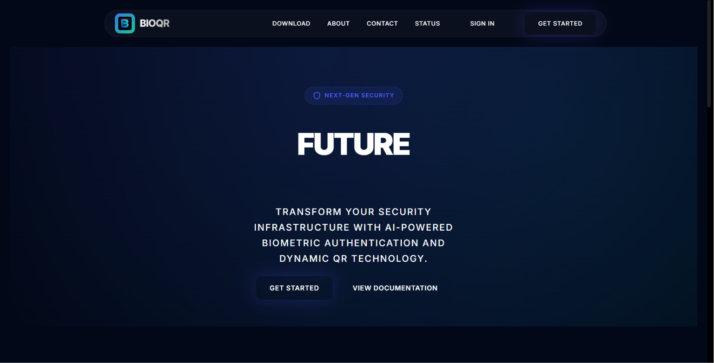
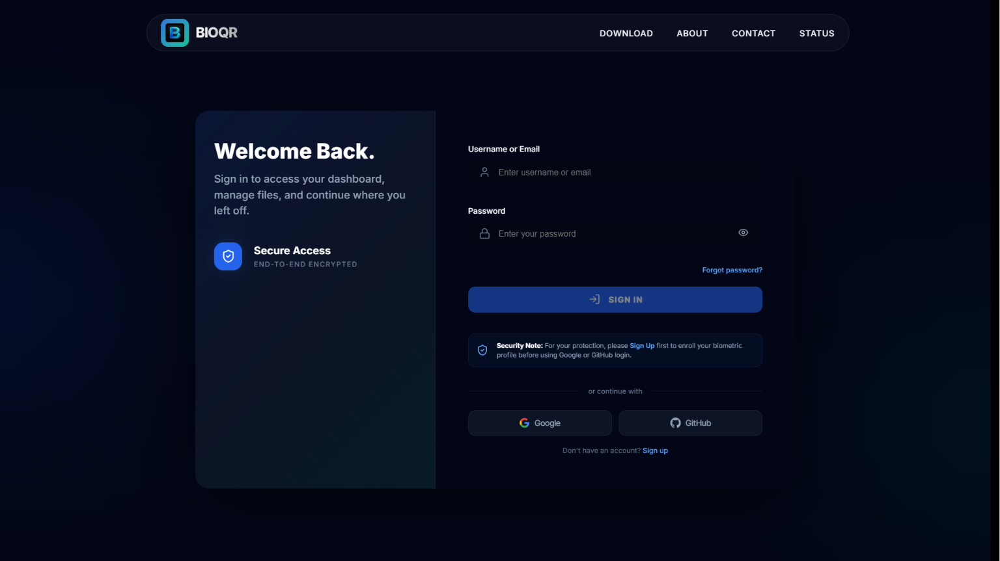
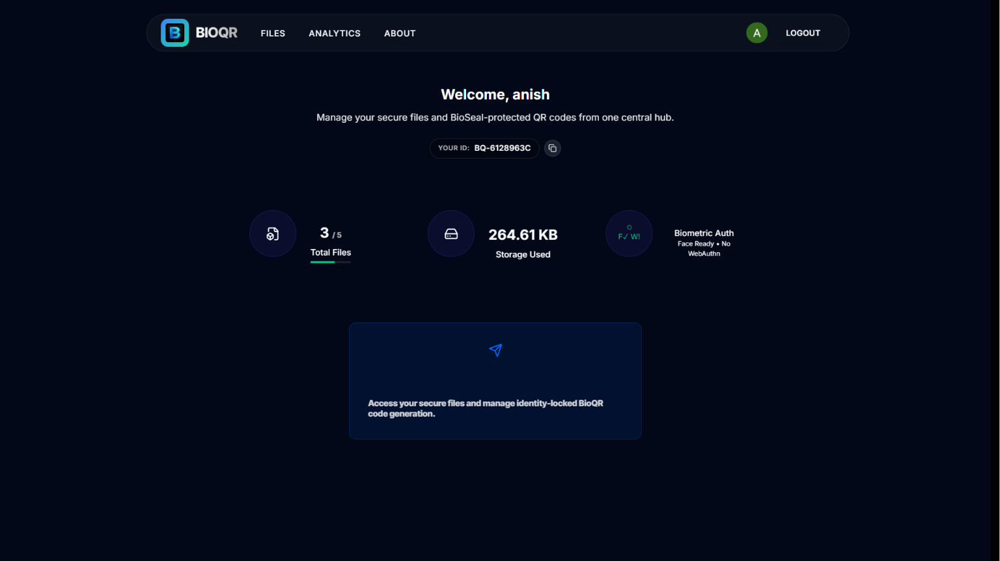
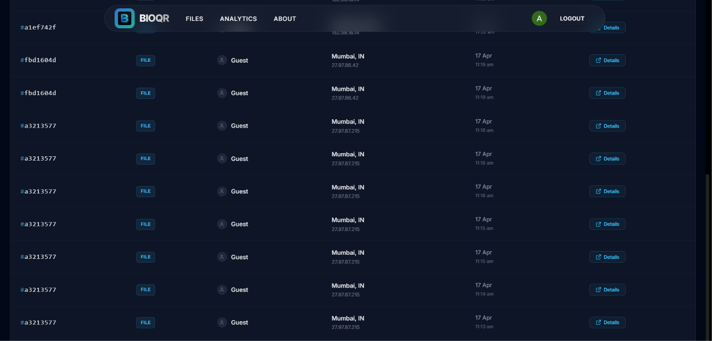

BioQR is a sophisticated zero-knowledge security platform that couples hardware-backed biometric verification (TouchID/FaceID) with identity-locked dynamic QR validation to safeguard enterprise resources.
Who's reviewing the demo today? Drop your name or company to customize the experience!

Premium dark-mode entry page showcasing key cryptographic solutions, team layouts, and Android links.

Sign-in dashboard with integrated WebAuthn checks for instant biometric keystore handshakes.

Dynamic QR creation panel letting users generate identity-locked dynamic credentials verified via biometrics.

Security audit logs, system performance charts, and real-time biometric validation logs.
Generate QR keys encrypted specifically for a receiver's public key. Decryption is only possible after a local biometric authentication scan.
Onboard and map user hardware tokens (TouchID, FaceID, Windows Hello) using the FIDO2 standard directly via standard browser WebAuthn hooks.
Enterprise administration section mapped with custom team scopes and distinct organization access control parameters.
Modernized Status panel that pings server processes, database tables, and external endpoints to measure live latency graphs.
Strict endpoint validation with Express v5 rate-limiters, CSRF protection double cookies, and encrypted JWT storage.
Integrated Android mobile app codebase that queries the Express APIs to verify dynamic QR codes locally on the move.
How sensitive keys are encrypted and verified using biometrics
Sender encrypts access data using the receiver's cryptographic public key.
Receiver scans QR. Device triggers FaceID/Fingerprint scan to verify identity.
Upon matching biometrics, hardware key decrypts data locally. Access is granted.
How devices are securely linked to user accounts
User requests biometric lock setup from the dashboard.
FIDO2/WebAuthn opens hardware biometric verification prompt.
Biometric match triggers creation of keys. Public key is saved in MySQL database.
Premium dark-mode responsive client interface bundled dynamically with Vite compilation.
Strong compile-time type safety across database controllers and REST payload formats.
Robust backend layer managing biometric key mapping and JWT auth routes.
Relational database storing user credential links and organization layouts (TiDB Cloud).
Document-based log vault tracking security audits and server latency timelines.
FIDO2/WebAuthn library handling authenticators alongside OAuth connections.